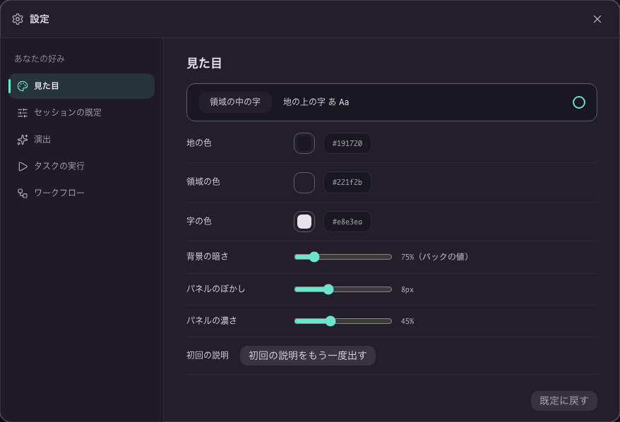
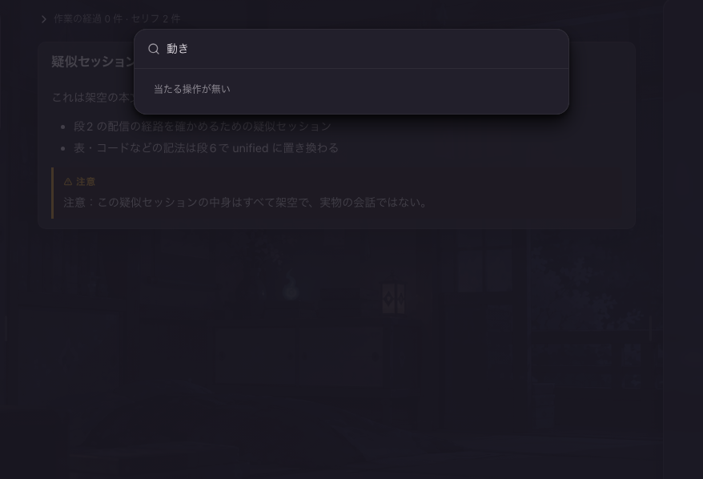
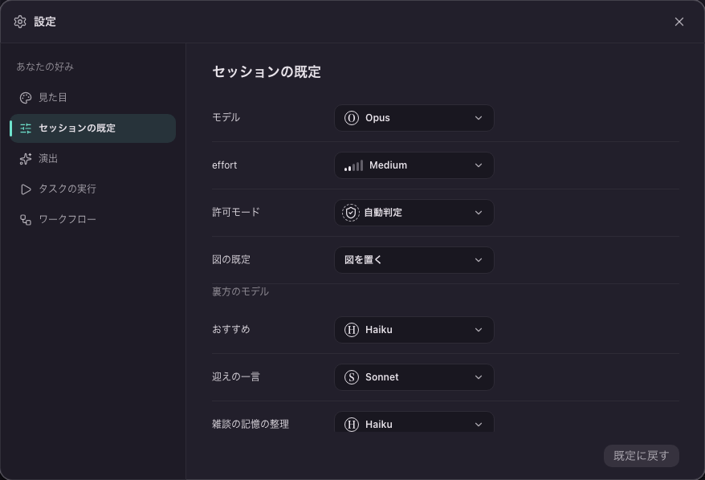

設定の見出しの大きさ済
書き出しから所要を外す済
左右の列にタブを足す2/4
やり取り
設定の見出しの大きさ
書き出しから所要を外す
左右の列にタブを足す
 🍵
📜
🍵
📜
手順 2/4
左右の列にタブを足して（架空の依頼）
手順 1 · 今の形を読む · 済み
左の列は幅 258px、サイドバーは 296px。サイドバーの中身はタスク一覧と使用量の帯だった。
手順 2 · 実装 · 進行中
タブの定義の表と、右の列の差し込み口を足した。触ったファイルと検査は右のタブで追える。
↑ 札を押すと、右の列が該当のタブで開く（追従）。
いまは単体テストを待っているわ。一分ほどよ。
唐傘 への依頼を書く
いま1
左右の列にタブを足す（架空）GH-9001
つぎ3
変更のタブに差分の折りたたみを足すGH-9002
部屋のタブの状態を session の記録から読むGH-9003
文脈のタブの内訳を context-usage から引くGH-9004
済み12▸
未コミット 3main より先 2 コミット+142 −38
未コミットのファイル押すと差分
main より先のコミット
a1b2c3dタブの定義の表を足した（架空）e4f5a6b右の列に差し込み口を開けた（架空）1646507mainpnpm run check4/6 段経過 2:41 · 見込み 4分
✓整形3s
✓lint41s
✓型検査22s
✕規約テスト12s
test/architecture/outside-world.test.ts
✕ 起こしてよい外部コマンドだけを使う
side-tabs.tsx が git を直接起こしている（架空）
単体テスト58s6,210 / 9,988 件
E2E—
受け入れ役—
前回
✓tw verify · 昨日 23:403m58s
このやり取りで撮った画3押すと大きく


前後
設定の見た目のページ1400×900

新しいセッションのページ720×900
コンテキスト 122k / 200k61%
システムと道具の定義18k
指示書（CLAUDE.md・AGENTS.md）14k
スキルの一覧と本文22k
記憶（MEMORY.md）12k
会話と道具の結果40k
読んだファイル16k
重い読み込み
docs/…/0058-three-column-single-stream.md6.1k
docs/…/display/sidebar.md4.8k
presentational-conversation-layout.tsx2.2k
コンテキスト61%
5時間34%
7日82%